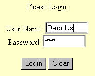

WODynamicElement is an abstract superclass for classes that generate dynamic elements: objects representing HTML or PDF elements whose values can programmatically change at run time. Dynamic elements have a name and one or more properties, instance variables holding such things as user-entered data or user-triggerable actions. The properties of a dynamic element are associated with, or "bound" to, the properties of the WOComponent object that represents the page (or portion of a page) in which the dynamic element appears.
At runtime, a dynamic element can extract values from the page, feed those values across the bindings to the owning component, receive back new data, and include that data in the next representation of the page. A dynamic element can also detect if the user has manipulated it (for instance, clicking a button) to signal some intention and then trigger the appropriate action method in the owning WOComponent. The bindings between properties of a dynamic element and properties of a WOComponent are made possible by WOAssociation objects, objects that know how to "push" and "pull" values to and from another object using keys.
WODynamicElements must implement the default initializer to initialize their instance variables with the appropriate association objects (passed in). As WOElement objects, they must also implement one or more of the three request-handling methods. In the context of request handling, a dynamic element can use its associations to:
All dynamic elements must implement appendToResponse:inContext:. If they accept user input or respond to user actions (such as mouse clicks), they should implement takeValuesFromRequest:inContext: and invokeActionForRequest:inContext:, respectively.
Dynamic elements do not know about their WOComponent object until run time. During request-handling, the application stores components (representing a page and subcomponents on the page) on a stack maintained by the WOContext object, with the currently referenced WOComponent on top of the stack. A dynamic element's WOAssociation retrieves the current WOComponent (through an invocation of WOContext's component method) and reads and writes values from and to the WOComponent.
A dynamic element can represent a single HTML or PDF element (such
as an editable text field) or a compound element, such as the
LoginPanel whose implementation is described below. WebObjects
includes a suite of ready-made dynamic elements and the WebObjects
Builder application makes these objects available on its palettes.
The Dynamic Elements Reference describes WebObjects' dynamic elements
and provides examples showing how to use them.
LoginPanel is a dynamic element that consists of a form containing a name field, a password field, and the standard Submit and Reset buttons (renamed Login and Clear). Users type their user name in the first field and a non-echoed password in the second field, and then click the Login (Submit) button. An action method in the associated WOComponent is then invoked, and the WOComponent is responsible for any verification and page navigation.

Figure 1: Example of LoginPanel
Before we get into the nitty-gritty of LoginPanel, here's a quick overview on what happens in the life of a dynamic element. When the application parses the declarations file (".wod") in a component directory, it identifies the name of each declared dynamic element (which is its class name) and the properties of that dynamic element. With this information packaged as arguments, it then invokes the dynamic element's initializer. In the initializer, the dynamic element sets its instance variables to the values of its passed-in properties and invokes its superclass's initializer; the message travels up the inheritance chain until it reaches WODynamicElement.
During a cycle of the request-response loop, request-handling
messages are propagated down the object graph of elements
representing the request or response page. When it's their turn, all
elements, static and dynamic, respond to appendToResponse:inContext: by
adding the HTML or PDF code they represent to the response page.
Dynamic elements, depending on their attributes, can also extract
values from the request page (takeValuesFromRequest:inContext:) and
trigger action methods in the request Component
(invokeActionForRequest:inContext:).
A dynamic element must declare instance variables to hold the association objects that represent its properties. These instance variables must be of type NSObject (in Objective-C, they must be declared as WOAssociation objects). Other (optional) instance variables can contain string constants used as keys for these properties. You should publish these string constants to users of your dynamic element, for they form the variables on the left side of assignments made in the declarations file (or in WebObjects Builder's Inspector panel). For example, LoginPanel's keys are "name,", "password," and "loginAction"; a typical component declaration might therefore be:
Login : LoginPanel {
name = theName;
password = thePassword;
loginAction = verifyUser;
}
The NSDictionary that is passed in as an argument contains WOAssociations, objects that know how to "push and pull" values to and from a WOComponent object. The associations in this dictionary define initial constant values or bindings between properties of the dynamic element and the WOComponent. Get these associations using the keys you've defined and assign the returned objects to their instance variables.
Code Example:
- (id)initWithName:(NSString *)aName associations:(NSDictionary *)someAssociations template:(WOElement *)anElement
{
nameKey = @"name";
passwordKey = @"password";
actionKey = @"loginAction";
if ([someAssociations objectForKey:nameKey] != nil) {
userNameAssociation = [someAssociations objectForKey:nameKey];
}
if ([someAssociations objectForKey:passwordKey] != nil) {
userPasswordAssociation = [someAssociations objectForKey:passwordKey];
}
if ([someAssociations objectForKey:actionKey] != nil) {
action = [someAssociations objectForKey:actionKey];
}
[super initWithName:aName associations:someAssociations template:anElement];
return self;
}
Implement the appendToResponse:inContext: method by appending the HTML code that represents the dynamic element to the body of HTML code that already exists for the response page. The WOResponse class has several methods that you can invoke for this purpose.
One technique illustrated in the example code below particularly merits explanation. Several WOContext methods are invoked to generate element IDs which are used as identifiers for "child" elements. On a particular "node" of the object graph, objects with the same parent have their parent's element ID plus a dot-separated digit appended to it. This digit begins at zero and is incremented according to a "sibling" element's position within the parent. (See the WOContext class for more on element ID manipulation.)
appendZeroElementIDComponent appends a ".0" to the parent's element ID to create the element ID for the User Name field. The code then assigns the element ID as the HTML name of the input field, "pulls" the required value from the Component property via "userNameAssociation", and assigns this value as the HTML value of the field. Next it increments the last digit of the element ID for the password field and assigns this element ID as the HTML name of the field. When you are finished with the child elements, delete the appended digit, thus restoring the parent's element ID.
Note that no element ID is assigned to the Submit or Request buttons. In HTML, form actions emanate from a form itself and not from the buttons the form contains.
Code Example:
- (void)appendToResponse:(WOResponse *)aResponse inContext:(WOContext *)aContext
{
NSString *uname;
//1. Generate form.
[aResponse appendContentString:@"<form method=\"POST\" action=\""];
[aResponse appendContentHTMLAttributeValue:[aContext url]];
[aResponse appendContentCharacter:'"'];
[aResponse appendContentString:@">"];
//2. Generate input fields
[aResponse appendContentHTMLString:@"User Name: "];
[aResponse appendContentString:@"<input type=\"text\" size=10 name=\""];
//3. Set HTML name of first field to new elementID
[aContext appendZeroElementIDComponent];
[aResponse appendContentHTMLAttributeValue:[aContext elementID]];
[aResponse appendContentString:@"\""];
//4. Get user name, make it HTML value.
uname = [userNameAssociation value];
if (uname != nil) {
[aResponse appendContentString:@" value=\""];
[aResponse appendContentHTMLAttributeValue:uname];
[aResponse appendContentCharacter:'"'];
}
[aResponse appendContentString:@">"];
[aResponse appendContentString:@"<br>"];
[aResponse appendContentHTMLString:@"Password: "];
[aResponse appendContentString:@"<input type=\"password\" size=10 name=\""];
//5. Set HTML name of second field to incremented elementID.
[aContext incrementLastElementIDComponent];
[aResponse appendContentHTMLAttributeValue:[aContext elementID]];
[aResponse appendContentString:@"\"><br><br>"];
[aContext deleteLastElementIDComponent];
//6. Generate buttons.
[aResponse appendContentString:@"<input type=\"submit\" value=\"Login\"> "];
[aResponse appendContentString:@"<input type=\"reset\"
value=\"Clear\"><br></form> "];
}
If a dynamic element is associated with a text field, check box, or similar UI element used for gathering user data or reflecting choices, it should implement the takeValuesFromRequest:inContext: method. In this method, it should extract the new or changed value and assign it to the appropriate association. Most user data is entered on forms; you can obtain these form values by invoking WORequest's formValueForKey: or formValuesForKey: with the element ID as key. Then "push" the value (or values) into the associated Component property (or properties) with WOAssociation's setValue: method.
As in appendToResponse:inContext:, manipulate the element ID (with Request's ...ElementIDComponent methods) before getting form values. Important: The element IDs assigned to elements should exactly mirror the element IDs assigned to those same elements in appendToResponse:inContext:.
Code Example:
- (void)takeValuesFromRequest:(WORequest *)aRequest inContext:(WOContext *)aContext
{
NSString *uname;
NSString *password;
[aContext appendZeroElementIDComponent];
uname = [aRequest formValueForKey:[aContext elementID]];
[aContext incrementLastElementIDComponent];
password = [aRequest formValueForKey:[aContext elementID]];
[aContext deleteLastElementIDComponent];
[userNameAssociation setValue:uname];
[userPasswordAssociation setValue:password];
}
If your dynamic element represents an HTML or PDF control--something capable of triggering an action--then it should implement the invokeActionForRequest:inContext: method. When the client generates a request, it embeds in the URL the sender ID , which is the HTML name of the element originating the request. (This name is the element ID you assigned in appendToResponse:inContext:.) In this method, the dynamic element determines whether it was the activated control by comparing its element ID with the sender ID. You can obtain the sender ID from the Request object passed in as the first argument.
Once a dynamic element establishes that it was the activated control, it invokes the action method in the WOComponent that is bound to the "action" property of the dynamic element. Invocation takes place by getting the value of the "action" property. The action method typically returns the response WOComponent (typed as WOElement), which invokeActionForRequest:inContext: then returns to its invoker.
As is the case with LoginPanel, a form is responsible for triggering an action, not the form's child elements. Since the element ID assigned to LoginPanel by its parent element is the same as the form's, there is no need to manipulate the element ID before invoking the action method.
Code Example:
- (WOElement *)invokeActionForRequest:(WORequest *)aRequest inContext:(WOContext *)aContext
{
if ([[aContext elementID] isEqualToString:[aRequest senderID]]) {
if (action != nil) {
return (WOElement *)[action value];
} else {
NSLog(@"Couldn't trigger LoginPanel action.");
return nil;
}
} else {
return [super invokeActionForRequest:aRequest inContext:aContext];
}
}
Returns a dynamic element identified by class aName and initialized with the objects in dictionary someAssociations . The dictionary contains WOAssociation objects, which know how to take values from, and set values in, an "owning" WOComponent. To properly initialize a dynamic element, you should use the published keys of the dynamic element to get the associations that belong to the dynamic element; then assign these objects to instance variables. The anElement argument, if not nil, is the root object of a graph of WOElements associated with the dynamic element.
Typically, a key in the someAssociations dictionary is identified with a property of the element, and the value of this key is the name of a property of the associated Component. For example, the value of key "userName" might be bound to "employee.name" in the WOComponent; this designation means that WOComponent has a property called "employee" (possibly referring to an "Employee" object) which in turn has a property called "name". In this case, the binding is two-way; changes in the dynamic element are reflected in the WOComponent property, and changes in the WOComponent property are communicated to the dynamic element. The value of an association can also be a constant, in which case the binding is one-way: WOComponent to dynamic element.